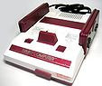
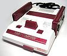
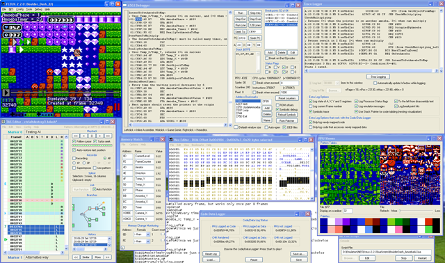
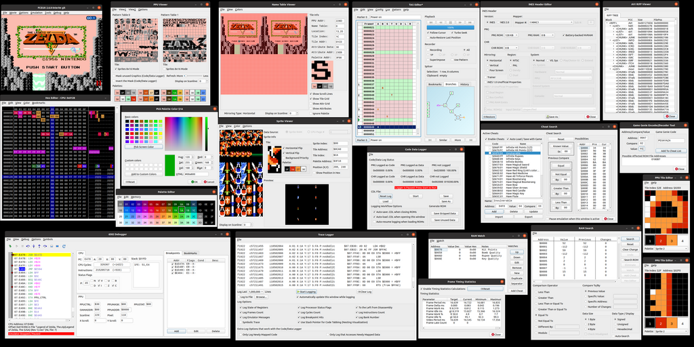

Introduction

 

FCEUX is a Nintendo Entertainment System (NES), Famicom, Famicom Disk System (FDS), and Dendy emulator. It supports NTSC (USA/JPN), PAL (European), and NTSC-PAL Hybrid modes. It supports both Windows and SDL versions for cross compatibility.
The FCEUX concept is that of an "all in one" emulator that offers accurate emulation and the best options for both casual play and a variety of more advanced emulator functions. For pro users, FCEUX offers tools for debugging, rom-hacking, map making, Tool-assisted movies, and Lua scripting
FCEUX is an evolution of the original FCE Ultra emulator. Over time FCE Ultra had separated into many distinct branches.
The concept behind FCEUX is to merge elements from FCEU Ultra, FCEU rerecording, FCEUXD, FCEUXDSP, FCEUXDSP CE, and FCEU-mm into a single branch of FCEU.
As the X implies, it is an all-encompassing version of the FCEU emulator that provides the best of all worlds for the general player, the ROM-hacking community, and the Tool-Assisted Speedrun Community.
For more details see the version history
You can find out what we've been up to since the last release by checking the commit browser.
We also have an IRC channel #fceu on freenode.net
Latest Release
FCEUX 2.2.3
28 July 2016
The 2.2.3 release fixes a number of emulation bugs, features overclocking (for lag reduction) and Dendy mode, and adds support for a bunch of new ROM dumps (mostly unlicensed). Reverse engineering tools and Lua scripting have got some updates, new input devices are supported, new palette files have beed added. The SDL port has been fixed and updated as well.
Windows Port Debugging Environment for Version 2.2.0

{kind=link}
Qt/SDL Port User Interface and Debug Tools for Version 2.3.0

{kind=link}